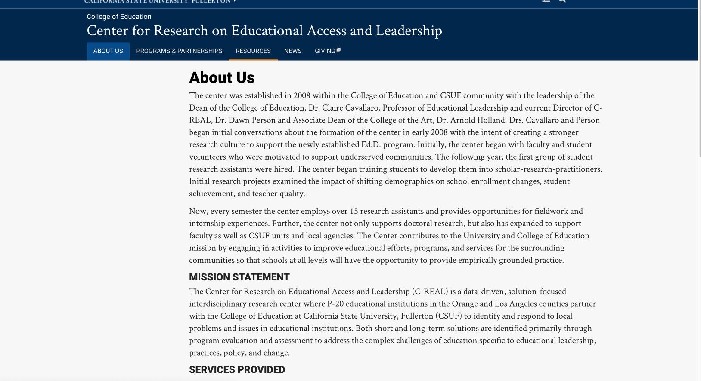

C-REAL Website Redesign
2020
Summary
I was responsible for re-designing and re-developing the C-REAL Website while upholding standards of accessibility and inclusivity based on training from the university. I created prototypes on Adobe XD to present to my program lead before implementation on the interface. I also conducted remote usability studies between my peers and program director to identify weaknesses and needs of the site before its launch.
Goal
How can we make the website more appealing, informative, and accessible?
Background
Timeline: 2 months
C-REAL is an Interdisciplinary Research Center Working to Identify and Respond to Local Problems and Issues in Educational Institutions.
Users
- Current CSUF students interested in joining the center
- Academic Professionals looking to partner with/hire C-REAL
- Organization representatives seeking a partnership with C-REAL
Concerns of the previous website
- Lack of engaging media
- Poor accessibility
- Outdated/inaccurate information
Before:
